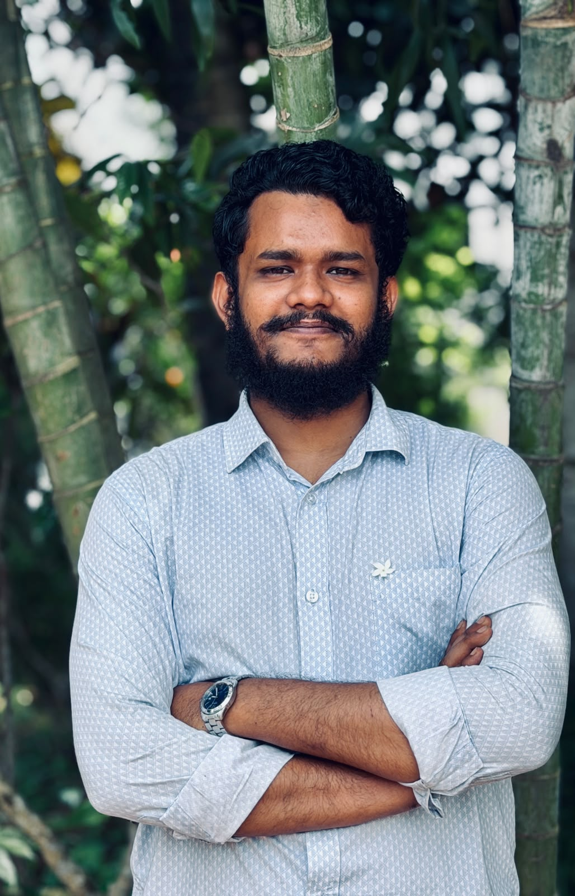

Altafur Rahman
Fuad
Flutter developer & CS undergrad — building AI-powered agriculture research and full-stack mobile apps.

I'm a Computer Science & Engineering undergraduate at BGC Trust University Bangladesh, currently in my 8th semester. My work sits at the intersection of full-stack mobile development and applied AI research — on one side, I build production-ready Flutter apps end-to-end; on the other, I'm developing CrossMamba-Agri, a Vision Mamba architecture for joint plant disease and pest classification, as my thesis proposal. I'm also exploring Bangla NLP, quantum computing, and other research directions I plan to carry forward into published work.
BSc in Computer Science & Engineering
BGC Trust University Bangladesh · Session January–June 2026 · 8th Semester Running
Higher Secondary Certificate (HSC)
Hazera Taju Degree College
Secondary School Certificate (SSC)
Kazem Ali High School
CrossMamba-Agri
Cross-Attention Vision Mamba for Joint Pest and Disease Classification
A dual-purpose Vision Mamba architecture that jointly classifies plant diseases and insect pests through a shared bidirectional encoder, a Background Suppression Module for noisy field imagery, and task-specific cross-attention routing — designed for accurate, resource- efficient diagnostics deployable on edge hardware. Supervised by Mohammad Salah Uddin Chowdhury, Assistant Professor & Chairman, CSE, BGC Trust University Bangladesh.
Future Publications
Additional research directions currently being explored, to be published as papers. Details to follow as work begins.
Quantum Computing
Actively exploring this field and open to collaboration or opportunities in quantum computing research.
CrossMamba-Agri Tracker
LiveProgress tracker for the CrossMamba-Agri thesis proposal — logging research milestones, experiments, and results as the project moves through its phases.
Research Tooling View on GitHub →Taqwa Tracker
Mostly CompleteDaily Salah, Hijri date, and sunrise/sunset tracking app built to help Muslims stay consistent with daily religious practice.
Flutter · Android · Web View on GitHub →Asrar-E-Tibb
SPD-2 · In ProgressAll-in-one healthcare super-app: medicine details, pharmacy purchases, a social feed for doctors/patients/pharmacists/shop owners, a notepad, medicine reminders, and pharmacy chat.
Flutter · Firebase · Supabase View on GitHub →MediLens
SDP-1Bilingual (Bangla + English) medicine information app covering vet, herbal, Unani, Ayurvedic, and English medicine, with natural ingredient details.
Flutter · Multi-language View on GitHub →DSA Practice
OngoingA running repository of data structures and algorithms practice — problems, solutions, and notes as I sharpen core CS fundamentals.
DSA · Problem Solving View on GitHub →Core — Flutter Development
Currently Learning
Open to opportunities, collaborations, and conversations about Flutter development, agricultural AI research, or quantum computing.